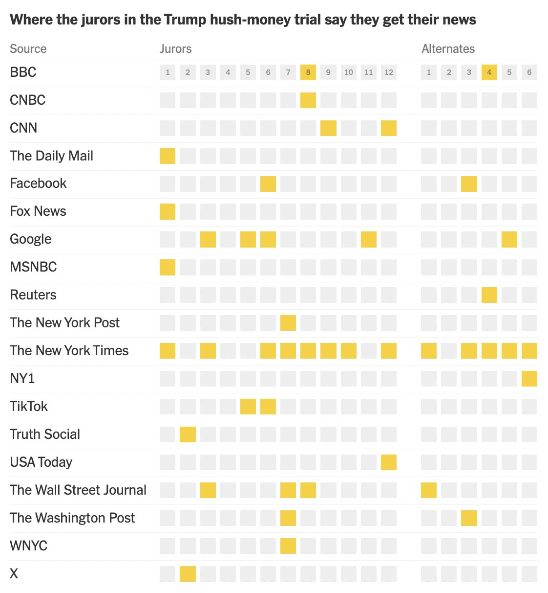

Trump Juror News Sources
gt
new york times
tutorial
Creating non-traditional tables in
gt
The What
On April 19th, 2024, the New York Times published an article with a visualization that detailed from which “outlets” jurors in the “Trump Hush-Money” trial turn to for their news consumption. I thought it would be a fun exercise to recreate it using the {gt} package.
You can use the toggles below to view the original table from the New York Times and our table using gt.
Original Table
Our Table

The How
For this table, we will need:
The Data
Grab the data
Typically, I try my best to find and scrape the original data source. But unfortunately, perhaps for security reasons, I could not locate the juror reponses to the screening questionnaire. So instead, I hard coded the data as a .CSV.
Grab the data with this:
data <- read_csv("https://gist.github.com/andreweatherman/8dde2049840d0a27a4ef2a3bef4bdd8f/raw/74e70fdaea6777463521c433f179d6962a93eca5/juror_news.csv")| juror | BBC | CNBC | CNN | The Daily Mail | Fox News | MSNBC | Reuters | The New York Post | The New York Times | NY1 | TikTok | Truth Social | USA Today | The Wall Street Journal | The Washington Post | WNYC | X | ||
|---|---|---|---|---|---|---|---|---|---|---|---|---|---|---|---|---|---|---|---|
| 1 | NA | NA | NA | 1 | NA | 1 | NA | 1 | NA | NA | 1 | NA | NA | NA | NA | NA | NA | NA | NA |
| 2 | NA | NA | NA | NA | NA | NA | NA | NA | NA | NA | NA | NA | NA | 1 | NA | NA | NA | NA | 1 |
| 3 | NA | NA | NA | NA | NA | NA | 1 | NA | NA | NA | 1 | NA | NA | NA | NA | 1 | NA | NA | NA |
| 4 | NA | NA | NA | NA | NA | NA | NA | NA | NA | NA | NA | NA | NA | NA | NA | NA | NA | NA | NA |
| 5 | NA | NA | NA | NA | NA | NA | 1 | NA | NA | NA | NA | NA | 1 | NA | NA | NA | NA | NA | NA |
| 6 | NA | NA | NA | NA | 1 | NA | 1 | NA | NA | NA | 1 | NA | 1 | NA | NA | NA | NA | NA | NA |
Manipulate the data
For exercise, I left us with a few required manipulations:
1) Transpose the data
Our data file is in a wide format relative to publication, but our table requires the jurors to be the column names. There are a number of ways to essentially “swap” rows and columns, and we are going to use the transpose function from data.table and specify keep.names to retain our column headers. Our headers, actually, are located in the first row of our table, so we will use row_to_names from janitor to “shift” everything up one row. Finally, let’s convert this back to a tibble and rename the first column.
| source | 1 | 2 | 3 | 4 | 5 | 6 | 7 | 8 | 9 | 10 | 11 | 12 | 13 | 14 | 15 | 16 | 17 | 18 |
|---|---|---|---|---|---|---|---|---|---|---|---|---|---|---|---|---|---|---|
| BBC | NA | NA | NA | NA | NA | NA | NA | 1 | NA | NA | NA | NA | NA | NA | NA | 1 | NA | NA |
| CNBC | NA | NA | NA | NA | NA | NA | NA | 1 | NA | NA | NA | NA | NA | NA | NA | NA | NA | NA |
| CNN | NA | NA | NA | NA | NA | NA | NA | NA | 1 | NA | NA | 1 | NA | NA | NA | NA | NA | NA |
| The Daily Mail | 1 | NA | NA | NA | NA | NA | NA | NA | NA | NA | NA | NA | NA | NA | NA | NA | NA | NA |
| NA | NA | NA | NA | NA | 1 | NA | NA | NA | NA | NA | NA | NA | NA | 1 | NA | NA | NA | |
| Fox News | 1 | NA | NA | NA | NA | NA | NA | NA | NA | NA | NA | NA | NA | NA | NA | NA | NA | NA |
2) Create the boxes
This is the “trickiest” part of the visualization. There are probably a multitude of ways to go about this, but to plot the boxes in each cell, I am using an inline block, with equal height and width.
First, you will notice that the table labels each juror number in the first row, but it resets the “counter” after the 12th juror (13-18 are “alternates”). To handle this, we need to create a “display number” that that follows the same logic. Since our column headers are the juror numbers, we can simply refer to it using the cur_column function.
Next, our values are NA if the juror does not utilize that news “source,” so we can set that color to a light grey and use a yellow when the cell is not NA (does use it).
Finally, the “trickiest” part is to create an HTML string that builds the box. If you don’t know HTML or CSS, that’s okay, you can still follow along; the code is pretty intuitive.
The “inline block” creates a small square with the height and width specified in the string.
It is filled with the
background-colorreferenced above.The shorthand
marginproperty first sets the top and bottom margins and then the left and right margins. Having smaller left and right margins will make the boxes appear closer together.The text (and boxes) are then centered, set at a 12px font size, and bolded (which the original table does not do).
data <- data %>%
mutate(across(-source, ~{
display_number <- ifelse(row_number() == 1,
ifelse(as.numeric(cur_column()) > 12, as.numeric(cur_column()) - 12, cur_column()),
NA)
color <- ifelse(is.na(.x), "#EEEEEE", "#FCCF10")
glue("<span style='display:inline-block; width:20px; height:20px; line-height:20px; background-color: {color}; vertical-align:middle; margin:4px 1px; font-size: 12px; font-weight: bold; text-align:center;'>{ifelse(!is.na(display_number), display_number, '')}</span>")
}))3) Separator
In the original table, there is a small gap to separate the jurors from the alternates. We can mimic this same effect by creating a dummy column after our above mutations and then place it after the 13th column (the 12th and final juror).
The Table
Most of our table can be created with stock gt functions, but we will need to add minimal CSS to top it off.
1) The Base Table
The “base” of our table will be created using fmt_markdown to render our HTML strings and gt_theme_nytimes to closely mirror the look of the original table. Importantly, we add an arbitrary “id” for later use with opt_css.
data %>%
gt(id = "table") %>%
gt_theme_nytimes() %>%
fmt_markdown(-c(source, blank))2) Handling the Separator Column
To create the separation effect, we will need to relabel our column and adjust its width.
... %>%
cols_label(blank = "") %>%
cols_width(blank ~ px(15))3) Column Labels
The original table does not have “traditional” column headers; instead, they appear to column spanners, which we can create with tab_spanner. To really drive home this effect, we’re going to need some CSS at the end. But for now, let’s add the column spanners, align them to the left, and make them a light grey.
... %>%
tab_spanner(columns = 1, label = "Source") %>%
tab_spanner(columns = 2:13, label = "Jurors") %>%
tab_spanner(columns = 15:20, label = "Alternates") %>%
tab_style(locations = cells_column_spanners(),
style = cell_text(align = "left", size = px(16), color = "#7E7E7E"))4) Table Annotations + Options
Let’s add our title and caption. We will also tweak our caption font size, force the line below the caption to white (not sure why this theme doesn’t do it by default), and compress our rows.
... %>%
tab_header(title = "Where the jurors in the Trump hush-money trial say they get their news") %>%
tab_source_note(md("Data and original table by New York Times<br>Recreation in R by @andreweatherman")) %>%
tab_options(data_row.padding = 1,
source_notes.border.bottom.style = "solid",
source_notes.border.bottom.color = "white",
source_notes.font.size = 12)5) Additional CSS
To make our column spanners look like headers – creating the spanner-header effect in the original table – we need some light css. When using opt_css, it is important to reference the same table id that you created in gt(id = ...).
The first line hides the column headers and sets their position to “relative,” allowing our spanners to “drop” in their place.
The second line “drops” our spanners with position: absolute, makes them visible, and adds some minor padding. Our spanners are already aligned left, done in step three, but remember that our boxes have slight left-right margins, so by default, our spanners look misaligned. We can “push” them to the right with padding-left: 3px.
Complete Script
The complete code is below. There is a copy button for convenience in the top right of the code chunk.
data <- read_csv("https://gist.github.com/andreweatherman/8dde2049840d0a27a4ef2a3bef4bdd8f/raw/74e70fdaea6777463521c433f179d6962a93eca5/juror_news.csv")
table <- data %>%
data.table::transpose(keep.names = "news") %>%
janitor::row_to_names(1) %>%
as_tibble() %>%
rename("source" = "juror") %>%
mutate(across(-source, ~{
display_number <- ifelse(row_number() == 1,
ifelse(as.numeric(cur_column()) > 12, as.numeric(cur_column()) - 12, cur_column()),
NA)
color <- ifelse(is.na(.x), "#EEEEEE", "#FCCF10")
glue("<span style='display:inline-block; width:20px; height:20px; line-height:20px; background-color: {color}; vertical-align:middle; margin:4px 1px; font-size: 12px; font-weight: bold; text-align:center;'>{ifelse(!is.na(display_number), display_number, '')}</span>")
}),
blank = '', .after = 13) %>%
gt(id = "table") %>%
gt_theme_nytimes() %>%
fmt_markdown(-c(source, blank)) %>%
cols_label(blank = "") %>%
cols_width(blank ~ px(15)) %>%
tab_spanner(columns = 1, label = "Source") %>%
tab_spanner(columns = 2:13, label = "Jurors") %>%
tab_spanner(columns = 15:20, label = "Alternates") %>%
tab_style(locations = cells_column_spanners(),
style = cell_text(align = "left", size = px(16), color = "#7E7E7E")) %>%
tab_header(title = "Where the jurors in the Trump hush-money trial say they get their news") %>%
tab_source_note(md("Data and original table by New York Times<br>Recreation in R by @andreweatherman")) %>%
tab_options(data_row.padding = 1,
source_notes.border.bottom.style = "solid",
source_notes.border.bottom.color = "white",
source_notes.font.size = 12) %>%
opt_css(
css = "
#table .gt_col_headings {
visibility: hidden;
position: relative;
}
#table .gt_column_spanner {
position: absolute;
visibility: visible;
padding-left: 3px;
}
"
)
## saving the table
gtsave_extra(table, "trump_jurors_news.png", zoom = 12)